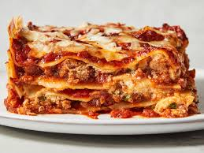

YOUR FAVOURITE LASAGNE RECIPE!!!😋😋😋
Lasagne is more than just a dish; it’s a celebration of flavors and
comfort that transcends cultures and generations. Originating from Italy,
this beloved pasta dish features layers of rich, hearty ingredients, each
contributing to its unique texture and taste. The warm, inviting aroma of
lasagne baking in the oven evokes memories of family gatherings, cozy
dinners, and special occasions. What makes lasagne truly special is its
versatility. You can find countless variations, from the classic meat
lasagne to vegetarian versions loaded with fresh vegetables and ricotta.
Each layer can be customized to your liking, allowing for creative
expression in the kitchen. Whether you prefer a traditional recipe with a
rich Bolognese sauce or a lighter take with spinach and a béchamel sauce,
lasagne offers something for everyone.

My Simple, Yet Delicious Lasagne Recipe 👇
Ingredients:
- 1 pound ground beef or Italian sausage
- 1 onion, chopped
- 2 cloves garlic, minced
- 1 can (28 oz) crushed tomatoes
- 2 tablespoons tomato paste
- 1 teaspoon dried oregano
- 1 teaspoon dried basil
- Salt and pepper to taste
- 15 oz ricotta cheese
- 1 egg
- 1 cup grated Parmesan cheese
- 2 cups shredded mozzarella cheese (divided)
- 9-12 lasagna noodles (no-boil or regular)
- Fresh basil or parsley (optional, for garnish)
Instructions:
- Preheat Oven: Preheat your oven to 375°F (190°C).
-
In a large skillet, cook the ground meat over medium heat until
browned. Drain excess fat. Add chopped onion and garlic; cook until
softened. Stir in crushed tomatoes, tomato paste, oregano, basil,
salt, and pepper. Simmer for about 15 minutes.
-
In a bowl, combine ricotta cheese, egg, and Parmesan cheese. Mix until
smooth. Season with a pinch of salt.
-
In a baking dish, spread a thin layer of meat sauce on the bottom.
- Layer 3-4 lasagna noodles over the sauce.
-
Spread half of the ricotta mixture over the noodles, followed by a
third of the mozzarella.
- Repeat layers (meat sauce, noodles, ricotta, mozzarella).
- Top with remaining meat sauce and mozzarella.
-
Cover with foil (to prevent sticking, spray foil with cooking spray).
-
Bake for 25 minutes, then remove foil and bake for an additional 15
minutes, or until cheese is bubbly and golden.
-
Let the lasagne cool for about 10-15 minutes before slicing. Garnish
with fresh basil or parsley if desired AND ENJOYYYY!!!!😋😋😋
PLEASE RATE OUR RECIPE BELOW :
âââââ